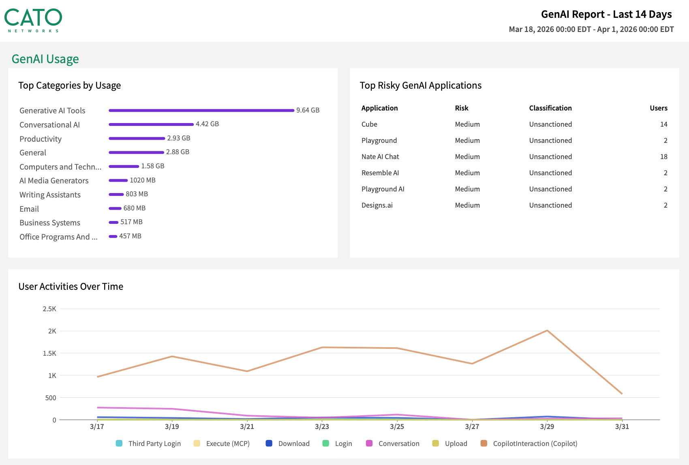
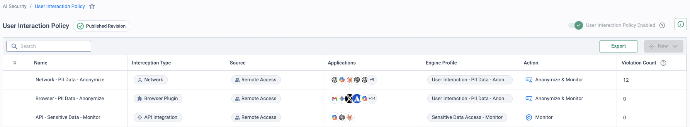
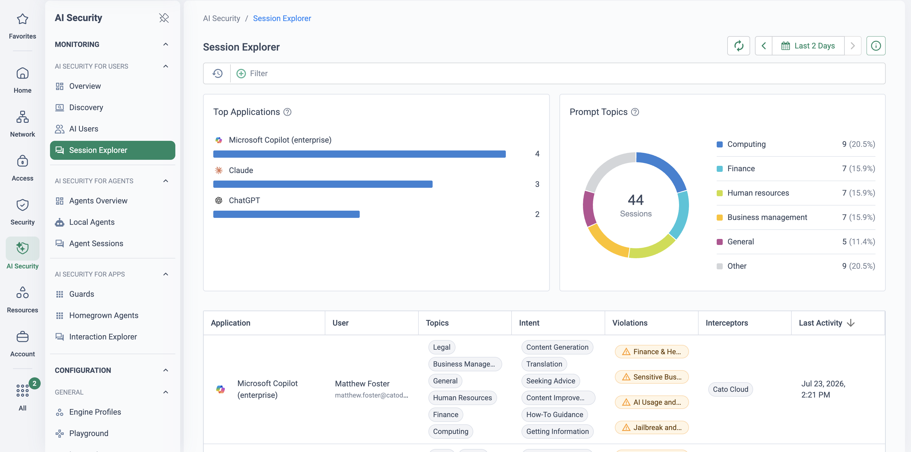
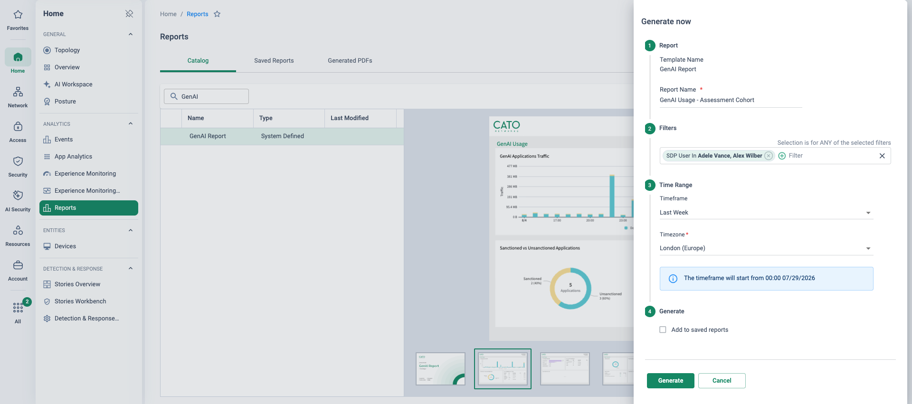

Deliver AI's upside — without the headlines
The source presentation is a customer-facing template marked DRAFT as of 09 Apr 2026, and the library's copy has not changed since 28 Apr 2026. Its findings and next-steps sections are placeholders and the prerequisites slide lists "others TBD". The runbooks on this page were written for the library; validate the latest deck and the offer terms with your regional SE lead before presenting to a customer.
CISOs are expected to deliver AI's upside while making sure the downsides never make headlines. A leaked prompt, a vulnerable model or a non-compliant workflow will quickly turn an innovation story into a crisis — and the pressure comes from three directions at once:
Boards want growth
AI adoption is a board-level mandate. Blocking GenAI wholesale is no longer a defensible position — the business will route around it.
Regulators want control
NIST AI RMF, ISO/IEC 42001 and the EU AI Act all expect organisations to know, classify and govern the AI systems in use.
Customers want trust
One employee pasting customer data into an unsanctioned chatbot is all it takes to turn an AI success story into a breach notification.
Cato's Strategic AI Framework gives CISOs a blueprint to align AI adoption with enterprise security, modelled on best practice. The framework begins with Shadow AI Discovery — and the AI Security Visibility Assessment is that first step, offered at no cost to customers for a limited time. The capabilities it uses are native to the Cato SASE Cloud Platform, enabling them causes no business disruption during the assessment period, and a Cato Sales Engineer provides the expertise throughout.
Model the conversation on what customers actually ask for:
- Regulated data exposure — "Which AI applications and prompts are exposing our regulated data right now?"
- Shadow AI use — "What are my employees actually doing with GenAI?" The deliverable is a report that answers this with evidence.
- Compliance audit — "If an auditor asked us to evidence GenAI usage against NIST, HIPAA or the UK AI framework, could we?"
What it proves — mapped to AI governance frameworks
The assessment is deliberately framed in the language governance teams already use. Each Cato capability exercised during the four weeks produces evidence against the three frameworks boards and regulators are asking about:
| Cato capability | NIST AI RMF focus | ISO/IEC 42001 focus | EU AI Act focus |
|---|---|---|---|
| Shadow AI discovery and inventory | Map AI systems, contexts and stakeholders | Define scope, assets, roles and operational controls | Support deployer inventory and risk awareness |
| AI app risk classification | Govern risk criteria and accountability | Risk assessment and treatment process | Support internal classification and approval workflows |
| Usage monitoring and trend reporting | Measure operational risk indicators | Performance evaluation and continual improvement inputs | Evidence for governance and supervisory oversight |
| Policy engine for sanctioned vs unsanctioned use | Manage risk responses | Operational control and policy enforcement | Support acceptable-use governance and internal restrictions |
Where this sits in the Cato SASE platform
- Office and remote users' GenAI traffic already crosses the PoP; an optional browser extension adds coverage.
- TLS inspection, CASB/DLP and the AI Interaction Policy run in monitor mode: nothing is blocked.
- Every sanctioned and shadow GenAI interaction is classified and logged across the four weeks.
- The AI Security dashboards and GenAI Report become the board-ready AI risk report.
How the assessment works
The scope is AI Security for End Users — the third-party AI your people use (chatbots, copilots, embedded AI). Because employee GenAI traffic already traverses the Cato PoP, discovery needs no new agents or appliances: TLS inspection, CASB/DLP and the AI Interaction Policy are switched on in monitor mode, so every interaction with every GenAI app — sanctioned or shadow — is captured and classified while traffic flows exactly as before. An optional browser extension, pushed via Intune/MDM, extends visibility to browser-level AI interactions. Securing AI you build (homegrown apps and agents) comes later in the journey.
Native to the platform
No new agents or appliances — the capabilities already exist in the Cato SASE Cloud Platform and are activated with a 30-day trial licence.
Non-disruptive by design
The AI Interaction Policy runs in monitor mode throughout discovery — traffic flows exactly as before, so there is no business disruption during the assessment period.
SE-led throughout
A Cato Sales Engineer leads the engagement — on Zoom or on-site — and is at the customer's disposal across all four weeks.
Board-ready output
An AI risk report and AI strategy recommendations, framed in NIST AI RMF, ISO/IEC 42001 and EU AI Act terms the governance team can take upstairs.
The four-week assessment, week by week
A Cato Sales Engineer leads the assessment end to end. The customer's total meeting commitment is deliberately light — one deployment call, two weekly syncs and a wrap-up:
-
Week 1 — Kickoff and deployment
A 30-minute deployment call: IdP integration, SASE/proxy integrations and (where agreed) browser-extension deployment. Customer requirement: get access to AI Security — the trial licence is activated with the Cato SE and CSM. Outcome: the tenant starts capturing AI activity.
-
Week 2 — AI usage discovery and assessment
AI Security → Overview AI Security → Discovery AI Security → AI Users
Discovery runs on the AI Security dashboards: review the AI apps found in use on the Discovery screen, assess their risk profiles and usage, and pull out top risks and patterns — for example, how many discovered apps train on submitted data. AI Users puts names against the numbers for the acceptable-use conversation. A 30-minute weekly PoV sync walks the customer through the findings (screens below). Outcome: real-time visibility and insights into AI activity.
-
Week 3 — Activate AI protections on a test group
Monitor → Data Protection Dashboard
Activate Cato AI protections: inline policies for mitigating AI risk, scoped to the agreed test group, then test enforcement mode. Typical test cases (genericise to your organisation): detecting and preventing PII in prompts, safety and acceptable-use topics, and custom-topic or free-text policies. The weekly 30-minute sync reviews what monitor-mode enforcement would have done.
-
Week 4 — Wrap-up and recommendations
A one-hour wrap-up meeting: visibility recap, the customer's requests, and a walk through the other platform capabilities. Deliverables: the AI risk report and AI strategy recommendations — the evidence base for the governance conversation that follows.
Before you start — and how to configure it
- TLS inspection enabled — without it, GenAI traffic cannot be classified at prompt level.
- CASB/DLP enabled — may require a trial licence.
- Prompt storage defined and authorised by the customer — privacy considerations must be discussed and approved before the assessment begins, not after prompts are already stored.
The deck's own list ends in "others TBD" (see the draft-deck note above) — confirm the current list before committing dates.
-
Activate the 30-day trial licence
Security → TLS Inspection Security → DLP Configuration
Arrange the AI Security trial with your Cato SE and CSM, and re-confirm the prerequisites in the tenant while the licence lands.
-
Deploy the AI browser extension (optional)
Push the extension via Intune (or the customer's MDM) to monitor browser-based AI interactions — worth agreeing in week 1 if the endpoint/desktop team needs lead time.
-
Set up the AI Interaction Policy in monitor mode
Monitor AI interactions only — no enforcement during discovery. This is what makes the assessment non-disruptive.
-
Define the users
In the policy's Source section, select the users or groups participating in the test group.
-
Select the AI applications to monitor
Choose the AI applications in scope — cast the net wide; shadow-AI discovery is the point.
-
Create a custom RBAC role for sensitive content
Set up a custom role with View permissions to sensitive content, so only authorised reviewers can read captured prompts — this backs the privacy agreement made up front.
What the customer sees
In the engagement everything is presented from the customer's own tenant — live console evidence, not slideware. The captures below show what good looks like (example tenant, fictional identities); the weekly syncs run from the CMA's three AI Security screens:


For the wrap-up pack, the same evidence exports as the CMA's GenAI Report. Two pages carry the story:


The journey after visibility
The assessment is deliberately the entry point: findings and dialogue with the customer (and partner) determine the actionable next steps, and the goal is a qualified cross-sell conversation. The AI security journey Cato positions runs in five stages:
1 · Visibility This assessment
Visibility and inventory of all AI usage — third-party, homegrown and agents.
2 · Policy
An AI governance board and defined acceptable-use policies for all AI systems.
3 · Usage control
Prompt-level enforcement to govern AI interactions and prevent data leakage.
4 · Secure AI dev
Secure AI development processes for homegrown apps and agents — model integrity, AI-SPM.
5 · Secure AI runtime
Runtime guardrails securing homegrown apps and agents against prompt injection, jailbreaking and agentic attacks.
In week 4, land the report, then anchor next steps to whichever stage the findings expose as the gap — typically stage 2 (no acceptable-use policy exists) or stage 3 (policy exists but nothing enforces it).
How to run it in the customer's tenant
This is the most natural PoV in the library, because the use case is a structured assessment: the engagement section above is the customer-facing shape, and this runbook is the SE's execution copy — what to configure, what evidence to bank each week, and what goes wrong. The frame is Running a Cato PoV with the scope pre-packaged: four weeks on a fixed clock, monitor mode throughout, a defined report deliverable. The success criteria are therefore the assessment's own weekly deliverables — agree the table at kickoff, then let the calendar drive.
| Week | Success criterion | Evidence artefact | Where it lives |
|---|---|---|---|
| 0 | The assessment can see prompt level — TLS inspection live for the assessment cohort, prompt storage approved, before the clock starts | TLSi policy covering the cohort beside the first classified AI interaction | Security → TLS Inspection · AI Security → Session Explorer |
| 1 | Discovery is live and passive — the tenant is classifying the cohort's GenAI traffic with zero user impact | First inventory cut: dated Discovery screenshot — apps, risk ratings, interceptors | AI Security → Discovery |
| 2 | Usage is attributed — named users, per-app interaction counts, embedded AI features separated from standalone tools | Interim readout pack: dated Overview and AI Users views | AI Security → Overview · AI Security → AI Users |
| 3 | Data exposure is evidenced without enforcement — what users paste and upload into GenAI, as monitor-mode matches only | Data-protection findings plus the draft GenAI Report | Monitor → Data Protection Dashboard · Home → Reports |
| 4 | Board-ready report delivered and a next step agreed with a named owner | Final GenAI Report PDF beside wrap-up minutes naming the next journey stage | Home → Reports |
- The offer, stated exactly. No-cost to customers for a limited time, SE-led — as the draft deck frames it and no more (see the draft-deck note at the top of the page): validate the current terms with your regional SE lead before committing dates, and do not embellish the offer.
- TLS inspection staged for the assessment cohort — the User Interaction Policy inspects AI traffic on the back of account-level TLSi, so without it there is no prompt-level story. Stage it per TLS Inspection: Staged Rollout Playbook, scoped to the cohort.
- Internet Firewall inspecting the traffic, with the default QUIC rule enabled — the KB's second prerequisite alongside TLSi (Working with the User Interaction Policy). The policy only sees prompts that arrive as inspectable TLS; a browser allowed to use QUIC over UDP bypasses inspection entirely. Cato creates the QUIC and GQUIC block rules the first time TLS inspection is switched on — confirm nobody has since disabled them.
- Licences — AI Security for End Users is a separate per-user licence; the 30-day trial is arranged with your Cato SE and CSM and is the assessment clock, so activate it at kickoff, not before. CASB/DLP enabled (may itself need a trial).
- Prompt storage authorised in writing before week 1, with the custom RBAC role from the setup section above so only named reviewers hold View permission on sensitive content.
- Scope on paper — which users or groups form the cohort, AI application scope cast wide (shadow discovery is the point), and the two weekly syncs plus the wrap-up booked at the kickoff call.
Week-by-week execution
-
Week 0 — stage the plumbing before kickoff
Security → TLS Inspection Security → DLP Configuration
Everything in the callout above happens before the deployment call, because each item gates the timeline: TLSi approval sits with whoever owns privacy, the trial licence sits with the SE and CSM, and the prompt-storage sign-off sits with legal. Close week 0 by confirming a cohort user's session is being inspected — a single classified AI interaction in the tenant is the proof the four weeks can start.
-
Week 1 — switch on passive discovery, take the first inventory cut
AI Security → User Interaction Policy AI Security → Discovery
After the 30-minute deployment call, create one User Interaction Policy rule: source = the assessment cohort, applications = Any, action Monitor — the prompt reaches the AI vendor and the interaction is recorded, nothing is touched (Working with the User Interaction Policy). Shadow AI Discovery itself is observational by design — it identifies AI services from application signatures, domains and behavioural patterns, with no vendor API integrations or extra agents (What is Shadow AI Discovery). Where agreed, push the browser extension via Intune/MDM for browser-level coverage (AI Security Browser Plugin). Then leave it alone: discovery runs passively all week. Close the week with the first inventory cut — a dated Discovery screenshot showing apps found, risk ratings and which interceptor saw each — into the evidence doc as item zero.

The assessment cohort covered three ways at once (reference lab tenant): the same Remote Access source scoped to a Network rule, a Browser Plugin rule and an API Integration rule — the interception type is a column, so the evidence itself records which interceptor saw each detection. Actions stay in the monitor family throughout and the counts accrue passively. -
Week 2 — usage deep-dive and the interim readout
AI Security → Overview AI Security → AI Users
Now the numbers mean something. Open the first sync on Overview — total AI apps, AI users, interactions and adoption rate, with the violation-rate and topics-popularity widgets setting the risk frame (AI Security Overview Dashboard). Walk Discovery per app — interaction counts, risk ratings, categories — then put names against the numbers on AI Users, sorting by violations and comparing departments (Monitoring via the AI Users Page): "Priya has used four GenAI tools this fortnight, two of them unsanctioned" is the sentence that starts the acceptable-use conversation. Separate embedded AI in the readout — discovery identifies AI capabilities inside broader SaaS platforms (Copilot in M365, Google Workspace features) as well as standalone tools, and embedded volume will otherwise drown the shadow findings. The three CMA screens embedded in Deliverables above are exactly this readout.
-
Week 3 — the data-protection lens, monitor-mode evidence only
Monitor → Data Protection Dashboard AI Security → Session Explorer
Shift from who uses what to what leaves: DLP findings against the GenAI application category show what the cohort pastes and uploads, and Session Explorer puts per-prompt detail behind each match — application, detected topic and which profile triggered, with raw prompts visible only to the sensitive-content RBAC role (Monitoring AI Security for End Users). Nothing is enforced in an assessment. Every finding is a monitor-mode match — "this rule would have fired" — which keeps the no-disruption promise intact; where the draft deck floats enforcement-mode testing on a test group, record the appetite and route it to the follow-on pilot instead. Close the week by assembling the draft GenAI Report: Home → Reports, a one-time report over the assessment window, filtered to the cohort's sites and users (Generating GenAI Reports).

Session Explorer classifies every GenAI conversation by topic and intent and flags the detections it triggered — visibility into what people ask AI, and where policy fired, without reading the prompts themselves. 
The draft report assembled exactly as the runbook says (lab tenant, fictional identities): the GenAI Report's Generate now drawer scoped to the assessment cohort with an SDP User In filter over the assessment window — the preview behind is already rendering the tenant's GenAI traffic and sanctioned-versus-unsanctioned split. -
Week 4 — final report, then route the next step
Home → Reports
Generate the final GenAI Report PDF over the full window. The two report pages embedded in Deliverables above are the artefact templates: the usage page is the week-2 story (categories, risky unsanctioned apps, activity over time) and the data-protection page is the week-3 story (actions, data-profile violations, per-rule hits) — the customer's own tenant produces the same two pages with their numbers. At the wrap-up, read findings against the criteria table row by row, then map the gap to the five-stage journey. For most accounts the finding is stage 2 or 3 — usage without control — and the recommended next step is the enforcement pilot on GenAI Security for End Users, whose PoV runbook stages the same User Interaction Policy from monitor to block on a test group. The assessment's monitor-mode evidence is that pilot's baseline, already gathered.
Troubleshooting the assessment
A sparse AI-traffic week
A small cohort can genuinely produce little GenAI traffic in seven days. Before concluding "we have no shadow AI", check the cohort size and the application scope (cast wide?), confirm TLSi is actually inspecting the cohort, and widen the cohort or let discovery run another week — an empty inventory is only a finding once the pipes are proven.
TLSi-scope blind spots
An app you know is in use never appears. Almost always a TLSi gap: a bypass rule or excluded category covering it, or cohort devices without the Cato certificate. Review exclusions against the cohort — and state in the report that the numbers describe inspected traffic only, so the blind spot is documented rather than hidden.
Embedded-AI attribution
Copilot inside M365 can post interaction counts that dwarf every standalone tool (21K+ in the demo Discovery screen) — sanctioned, embedded volume that masks the shadow findings if left in one bucket. Separate embedded AI features from standalone apps in every readout, and headline the shadow rows.
Dashboards empty after kickoff
Usually sequencing, not signal: the trial licence has not landed, or TLSi went live after the cohort's sessions started. Confirm the licence with your SE and CSM, then watch Session Explorer for the first classified interaction — one event proves the chain end to end.
Reviewers cannot read prompts
By design: raw prompt content is gated behind the View-sensitive-content permission on the custom RBAC role from setup. If a reviewer needs it, add them to the role deliberately — do not loosen the default, because that role is what backs the privacy agreement signed in week 0.
Report numbers don't match the syncs
The GenAI Report runs account-wide by default; the dashboards you presented were filtered to the cohort. Filter the report to the cohort's sites and users and re-run over the same window — the wrap-up must not open with an arithmetic dispute.
Gotchas & exit
- Assessment ≠ enforcement. Monitor mode throughout is what makes the no-disruption claim true. If the customer wants to see blocking, that is the follow-on enforcement pilot — demonstrating a block mid-assessment converts a visibility engagement into a change-managed one.
- The draft-deck caveat stays authoritative. The offer is "no cost (limited time)" exactly as the deck states — confirm terms with the regional SE lead before quoting them to a customer.
- The 30-day trial is the clock. Licence expiry ends visibility: book the wrap-up inside the window and bank every export and the final PDF before it lapses.
- Prompt privacy is a contract, not a setting. Storage was approved up front, the RBAC role limits who reads content, and any prompt examples in the report go in anonymised.
Unwinding cleanly: disable the monitor-mode User Interaction Policy rule rather than deleting it — it is the evidence record and, on a yes, the enforcement pilot's first rule; remove the browser extension via Intune if the customer is not continuing; leave TLSi as the customer's standing decision rather than assessment debris; and hand over the final report with the recommendation attached. If the decision is to proceed, nothing is rebuilt — the pilot on GenAI Security for End Users starts from the policy and baseline this assessment leaves behind.